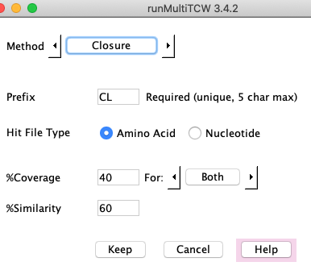
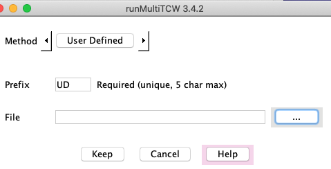

|
Click Add in section "Cluster Methods" to add a new clustering method; this brings up the
Method panel. The drop-down beside "Method" shows BBH, Closure, OrthoMCL, and User defined.
You can add any number of cluster methods. You can add the same method multiple times with different parameters,
where only the "Prefix" has to be different.
All methods need a unique prefix, which is used to prefix the cluster names, e.g.
a method with prefix "BB8" will have cluster names BB8_00001, BB8_00002, etc. The
prefix can only be 5 characters, but make it a meaningful 5 characters.
When the multiTCW database is created from nucleotide sTCW databases, it is
advantageous to have BBH be at least one of the methods as these pairs are used for the overall
summary and for the KaKs pairs.
The Help page for clustering provides more detail, but the following is an overview.
BBH
The BBH finds the bi-directional best hit based on hit e-value.
It uses the hits that were loaded
into the database with Add Pairs from Hits. The following explains the parameters:
- Amino acid or nucleotide (for NT-mTCW only).
- %Similarity - the hit similarity (Identity).
- %Coverage - the alignment length is divided by the length of the sequence times 100 to get the
%Coverage for each sequence of the pair (Cov1 and Cov2). You can choose "Either", which requires
that either Cov1>%Coverage OR Cov2>%Coverage. If you choose "Both", then Cov1>%Coverage AND Cov2>%Coverage.
For example, for an alignment:
Seq1 -------------------------------
Seq2 ----------
This will pass the filter %Coverage>=80 if "Either" is selected, but not "Both".
- The "Select sTCWdbs" will only be present if there are more than two sTCWdbs loaded into the mTCWdb.
The rules are as follows:
- Select two sTCWdbs for the standard BBH of one pair per cluster.
- Select N (N>2) sTCWdbs, and clusters of exactly size N will be created, where each pair in the cluster is a BBH pair.
- Do not select any sTCWdbs, and one cluster set will be created from all pairs of sTCWdbs.
|

|
Closure
Closure has the following requirements:
- All sequences in a cluster must have a hit
with all other sequences in the cluster.
- Each sequence must pass the filters with at least
one other sequence in the cluster, where the filter parameters are exactly as described for BBH.
The algorithm uses the hits from the database.
|

|
OrthMCL
OrthoMCL requires numerous steps to run, and uses a temporary MySQL database;
TCW organizes all these details.
OrthoMCL uses the hit file hitsAA.tab. It does not guarantee that
all sequences in a cluster have a hit with each other.
OrthoMCL occasionally fails -- every time this has happened to me, I rerun and it works.
|

|
User-defined clusters
For this you create a file specifying the groupings, and the interface simply uploads that file. Hit results
are not used. The group file has the following format:
..
D26: tra|tra_030 tra|tra_184 tra|tra_094 pro|pro_100
D27: tra|tra_045 tra|tra_209 pro|pro_011
...
Each line starts with "DN", where N is the group number, and then has a space-separated list of the
sequences in the group, prefixed by the project prefix that you entered when you set up the mTCW.
|

|
4. Run Stats
The statistics are broken into four sections:
- Run on the total hit pairs in the database:
- The PCC (Pearson Correlation Coefficient) is only relevant if there are
shared conditions, as it is used to determine how similar the RPKM values of the
conditions are. It is run on all pairs in the database.
- Alignment of hit pairs in clusters.
This is "only" relevant for a mTCW database created from only nucleotide sTCW databases:
- For each alignment, the following is performed:
- Synonymous codons, nonsynonymous codons, %match, #gaps, GC content, etc.
- The summary statistics shown on the Overview for "Pairs".
- Outputs the Ka/Ks files for input into
KaKs_calculator2.
- Only if Ka/Ks input files exist.
- Run Stats with Write selected to output the files for input to
KaKs_calculator
- Run the
KaKs_calculator from a terminal window.
- Execute Run Stats again with Read selected.
- Multiple alignment of clusters.
- Align all clusters using
MAFFT3.
- Compute consensus length, standard deviation of length, sum-of-pairs score, and Trident score using
MstatX4.
|

|
After adding clusters and running stats, you can add more clusters. In order to update the stats after adding more clusters:
- Select Compute pair stats will align any new unaligned pairs in clusters and update the summary.
- Select KaKs Write will align ALL pairs in clusters and update the summary.
Details on running KaKs_calculator
After the KaKs files have been created using Run Stats:
The following times are from the log files for building an mTCW database with three NT-sTCWdbs.
| Step | Time | Added
|
|---|
| Build Database | 5h:0m:36s | 138,907 sequences
| | Add Pairs | 2h:3m:04s | 454,568 pairs
| | Add New Clusters | 1h:23m:05s | 46,831 clusters
| | Run Stats | 1h:33m:15s | 116,109 alignments
|
The longest task is to Add GOs (timing not shown); this task can be done at anytime, so it is recommended to wait until everything else is finalized before adding the GOs.
The search program (e.g. blast) is run on #CPU, but all mTCW tasks only use one CPU.
runMultiTCW is not very forgiving if datasets or cluster methods are entered wrong.
Its easiest to just to Remove the offending dataset or cluster and re-enter it.
A file called mTCW.error.log is created if there is an error. If its not clear how to
fix the problem, send the file to tcw@agcol.arizona.edu.
The clusters can be viewed by either:
- Click the Launch viewMultiTCW button in the
runMultiTCW interface.
- Execute './viewMultiTCW' and a window of existing mTCW databases will be displayed, where
databases can be selected for display.
- Execute './viewMultiTCW <database name>', e.g. ./viewMultiTCW demo
displays the window on the right.
There is Help on all the viewMultiTCW views, and Tour shows snapshots of some of the viewMultiTCW windows.
|

|
- Li, L., Stoeckert, C.J., Jr. and Roos, D.S. (2003)
OrthoMCL: identification of ortholog groups for eukaryotic genomes. Genome Res, 13, 2178-2189.
- Zhang Z, Li J, Xiao-Qian Z, Wang J, Wong, G, Yu J (2006) KaKs_Calculator: Calculating Ka and Ks through model selection and model averaging. Geno. Prot. Bioinfo. Vol 4 No 4. 259-263.
- Katoh K, Standley DM (2013) MAFFT Multiple Sequence Alignment Software Version 7: Improvements in Performance and Usability. Molecular Biology and Evolution Vol 30, Issue 4 772:780
- Guillaume Collet (2012) https://github.com/gcollet/MstatX.
- Edgar RC (2004) MUSCLE: multiple sequence alignment with high accuracy and high throughput. Nucleic Acids Res 32: 1792-1797.
|


{kind=link}
{kind=link}